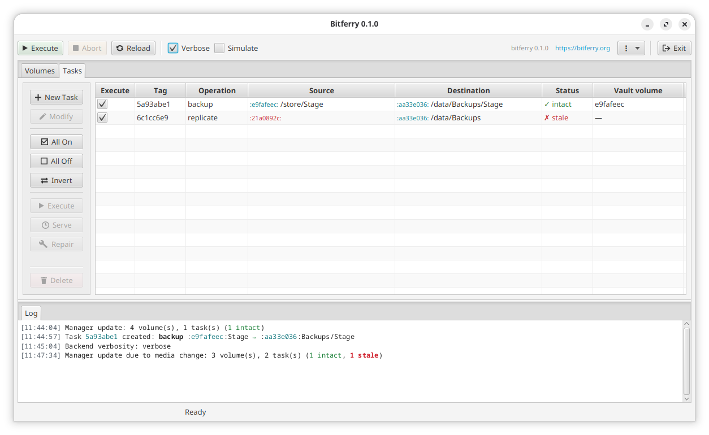

Bitferry
File synchronization & backup automation
Bitferry is a task-based file synchronization and backup automation tool built on top of Rclone and Restic. It converts absolute endpoint paths into volume-relative ones, making data position-independent: tasks keep working no matter where the portable storage appears the next time — a different UNIX mount point or a different Windows drive letter.
Consider Bitferry as a human data courier: it does what Johnny Mnemonic did, except it is a file on a USB stick rather than an overloaded brain.

Features
- Multiplatform (Windows / UNIX) operation
- One way / two way data synchronization
- Recursive directory copy / update / synchronize
- Incremental backup with snapshotting and retention
- Password-based end-to-end encryption
- Site-local keyring / per-volume vault password storage
- Cloud relay and offline portable storage (USB / HDD / SSD) with media change detection
- Command line and graphical frontends